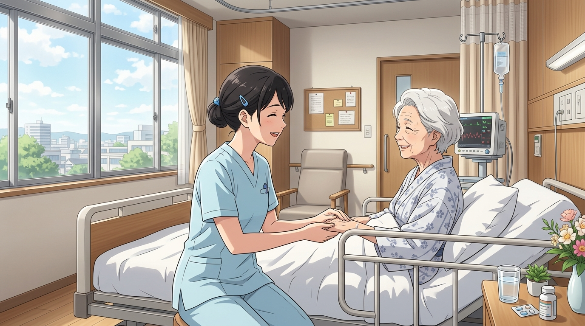
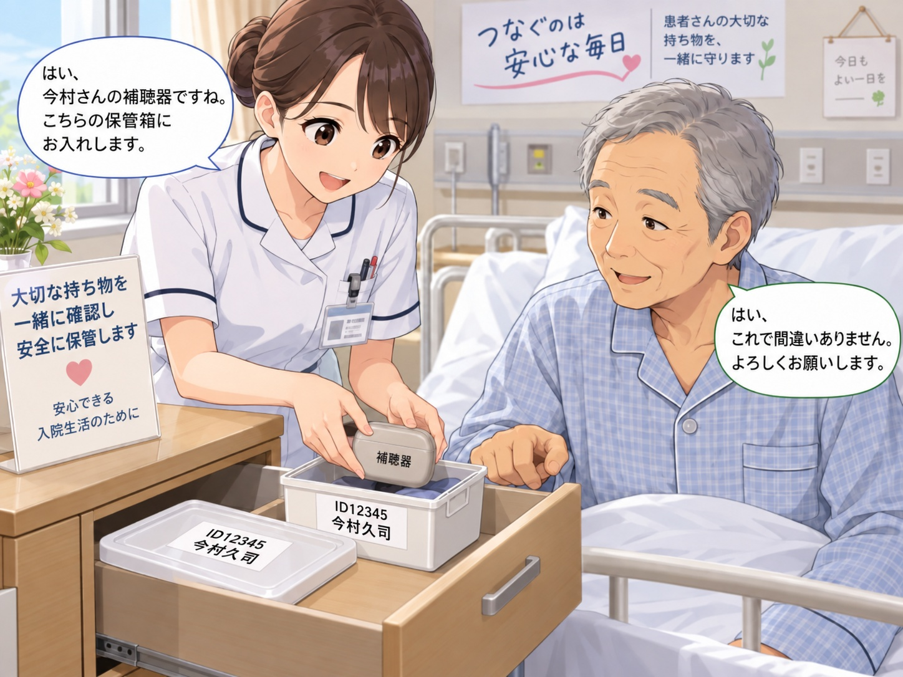
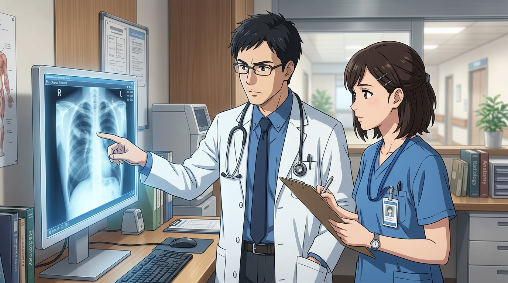

脳神経内科専門医・指導医 ／ 総合内科専門医・指導医
・義歯、補聴器、眼鏡は院内紛失事故のトップ
・食事、就寝、入浴、検査・手術で着脱を頻繁に繰り返す
・管理能力の異なる患者層が
混在する病棟環境
・管理責任の曖昧さ：「患者自己管理」か「病院預かり」かが不明確
・感情的・法的対立：「病院が無くした」「弁償しろ」と家族とトラブルに発展
・咀嚼不能による摂食量激減
・食形態低下による低栄養進行
・サルコペニア・長期入院化
・視覚・聴覚遮断がせん妄を誘発
・難聴のある入院患者は
転倒リスク約1.4〜1.5倍
・意思疎通困難による治療遅延
・「紛失」と思われた義歯が
気道・食道に迷入していた事故
・窒息死や縦隔洞炎の危険
・ティッシュや紙コップに仮置き
・下膳時に生ゴミ残飯と一緒に誤廃棄
・最も頻度が高い典型パターン
・就寝中や覚醒不良時に口から脱落
・枕カバーやシーツに巻き込まれる
・回収袋に入りリネン工場へ搬送される
・ER→病棟、ICUへの転棟時
・ストレッチャー移乗時の脱落
・申し送り時の確認漏れ
・自己管理可能な患者本人が保管
・原則として本人の自己責任
・施錠ロッカー等の提供設備義務
・認知症、せん妄、意識障害、麻痺等
・診療契約上の安全配慮義務（付随義務）
・危険を予見できたのに放置すれば病院の過失
・スタッフが「預かります」と受領した時点で寄託契約が成立
・病院は「善管注意義務（民法400条）」を負う
・漫然と紛失させた場合、債務不履行として損害賠償責任が発生
・自己管理困難な患者では病院の見守り責任が厳しく問われる

・新品の再購入額全額ではない
・使用年数に応じた減価償却を考慮
・ただし自費義歯や補聴器は数十万円に達することも
・英国調査：1件最大£2,200（約44万円）の弁償
・患者側の指示違反があれば過失相殺の余地
・早期再作製の実費支援など柔軟な示談が多い
・入院24時間以内に口腔評価
・義歯の有無（個数・特徴）をカルテに記録
・全患者に専用ポットを支給
・本体とフタの両方に氏名・ID
・ティッシュ包装の全面禁止
・転棟・検査・手術時に
送り側と受け側でダブルチェック
・リストを用いて申し送り
ティッシュ、紙コップ、お盆、膿盆は厳禁。本体とフタに氏名＋ID。
床頭台の上に放置せず、第1引き出し内ボックスまたは施錠棚へ。
病棟間移動、検査、手術、シーツ交換時にチェック項目を設ける。
持参品リストと現物を患者・家族と突き合わせ、受領確認を得る。
・ティッシュ包み：丸めるとゴミと誤認され誤廃棄
・紙コップ：飲み残しとして清掃スタッフが回収
・食事トレー：下膳ラインで残飯と一緒に廃棄
・密閉できるふた付き専用ケースを使用
・「本体」と「フタ」の両方に記名（入れ替わり防止）
・自己管理困難例は不要な装飾品・予備具を持ち帰り依頼

・紛失を恐れて外したままにすると感覚遮断
・指示が通らずせん妄悪化、不穏行動
・バランス感覚低下による転倒リスク増加
・日中は積極的に装着して覚醒・リハビリ促進
・就寝前・入浴前・検査前のみ定位置ケースへ収納
・高額補聴器は病棟預かり証の発行を検討
・病室ゴミ箱の回収停止
・配膳カート・下膳ゴミ袋の捜索
・リネン回収袋の確保
・直近24〜48時間の移動確認
・CT、内視鏡、処置室、ストレッチャーの確認
・医療安全管理部門へインシデント報告
・家族へ経緯と捜索状況を速やかに説明
・「紛失」とされた義歯が気管支に迷入していた重大事故
・数日後に呼吸不全・窒息死に至った事例が報告
・認知症・高齢者ではむせない（不顕性誤嚥）
1. バイタル、SpO2、喘鳴、嚥下痛の確認
2. 口腔内・咽頭の直視確認
3. 頸部・胸部X線（必要に応じCT）撮影で迷入を除外

法的見立て：患者がせん妄状態にあり自己管理能力が欠けていることを病棟が把握していた場合、「床頭台に置いたから患者責任」は通らない。安全配慮義務違反として病院に賠償責任が認められる可能性が高い。
初動のアクション：ゴミ箱捜索と同時に、まず呼吸状態を確認し頸胸部X線で気道内迷入を除外する。
□ 入院時持参品リストに義歯・補聴器の個数を明記
□ 専用ケース（本体＋フタ記名）を配備
□ 保管場所を床頭台の第1引き出しに統一
□ 不要な装飾品・予備具は家族へ持ち帰り依頼
□ 下膳時・シーツ交換時に巻き込み注意
□ 転棟・検査申し送りに装着有無を組み込む
□ 紛失発覚時はまず頸胸部X線で迷入除外
□ 退院時はリストと現物を突き合わせて返却
・私物管理は患者の尊厳と生命を守る医療安全
・自己管理困難例では病院の安全配慮義務が成立
・外したら即記名ケース、場所固定、移動時チェック
・紛失時は直ちに誤嚥・気道迷入をスクリーニング
1. Doshi M, et al. Br Dent J. 2022. PMID: 35379926.
2. Mann J, et al. Br Dent J. 2017. PMID: 28839235.
3. Tiase VL, et al. Am J Prev Med. 2020. PMID: 32444002.
4. 日本医療機能評価機構 医療安全情報.
5. NHS England: Preventing Denture Loss in Hospitals.